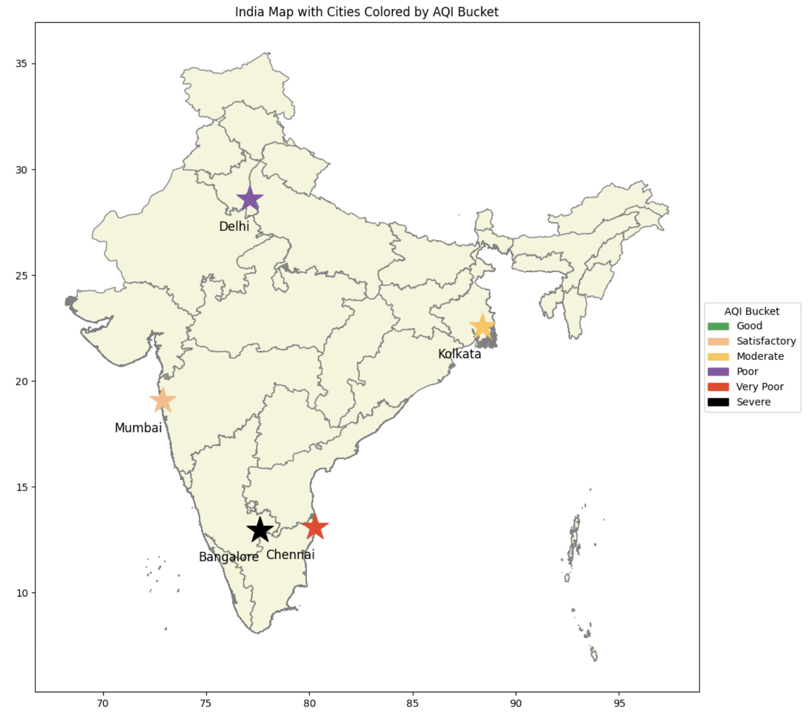

Air pollution is a big environmental and health problem in India, with cities frequently experiencing hazardous air quality due to industrial emissions, traffic, and urbanization. These poor conditions often lead to respiratory and cardiovascular diseases. The Air Quality Index (AQI) provides a comprehensive measure of pollution levels, categorizing air quality from “Good” to “Severe” based on factors like PM2.5, PM10, NO2, and SO2. Understanding these trends is crucial for raising awareness and helping fix the problem.
This project aims to analyze air quality trends in India from January 2020 to December 2024, using historical data to identify pollution patterns. By exploring major pollution sources through data visualization, we aim to provide meaningful insights that can support data-driven solutions for cleaner air and healthier communities.
To learn more about air pollution trends in India you can visit The New York Times & IQAir
The dataset we selected, from Kaggle.com, provides comprehensive air quality data for major cities across India, covering the period from 2015 to 2024. It includes key air pollution indicators such as the Air Quality Index (AQI) and the concentration levels of harmful pollutants. The dataset is sourced from publicly available air quality monitoring stations across multiple cities in India. The dataset tracks air quality across 25 major Indian cities, including Delhi, Mumbai, Kolkata, Chennai, Bengaluru, Hyderabad, etc. We hope to gain more insights on what cities are at higher health risks and potential causes of the pollutants.
| Variables | Details |
|---|---|
| City | Names of different cities |
| Datetime | Date of data recording |
| PM2.5 | Fine particulate matter (<2.5µm) contributing to air pollution |
| PM10 | Particulate matter (<10µm) affecting air quality |
| NO | Nitric Oxide (from vehicles and power plants) |
| NO2 | Nitrogen Dioxide (toxic gas causing smog) |
| NOx | Total concentration of NO & NO2 |
| NH3 | Ammonia (from agriculture, forming harmful particulates) |
| CO | Carbon Monoxide (reduces oxygen delivery in the body) |
| SO2 | Sulfur Dioxide (from fossil fuel burning, irritating health) |
| O3 | Ozone concentration (harmful gas causing respiratory issues) |
| AQI | Air Quality Index (overall pollution level indicator) |
This is a Map of India with different markings based on the cities' most common AQI Bucket Level.
This map shows the most common air quality conditions experienced in major Indian cities over the past 5 years. By highlighting the dominant AQI category in each of the cities, we can visually compare which cities frequently face high pollution levels. For example, in Chennai and Bangalore, the air quality is often "Very Poor" or "Severe".
By mapping this data, we can observe how factors like climate, traffic, and population impact long-term pollution trends. The colored stars correspond to different AQI categories, as shown in the legend, allowing for quick comparisons across India.
This interactive chart displays Carbon Monoxide (CO) levels across different cities in India.
This line chart visualizes the trends in Carbon Monoxide (CO) levels across major Indian cities over time. By selecting a specific city from the dropdown menu, users can explore monthly fluctuations in CO concentrations from 2020 to 2024. The chart highlights how CO levels vary by location, revealing patterns influenced by factors such as industrial activity, vehicular emissions, and seasonal changes. For instance, cities with high traffic congestion may exhibit consistently elevated CO levels, whereas those with stricter emission controls might show lower averages.
The bar plot visualizes the average O3 (ozone) levels across five major Indian cities—Kolkata, Delhi, Mumbai, Bangalore, and Chennai—showing that the values are nearly identical, with only slight variations. This consistency suggests that ozone pollution is driven by common factors across these cities, such as vehicle emissions, industrial activity, and climate conditions that contribute to ozone formation. Since O3 is a key component of smog and has significant health impacts, understanding these patterns is crucial.
The O3 levels appear to be around 100, which is relatively high and could pose health risks. According to air quality standards, prolonged exposure to ozone levels above this threshold can lead to respiratory issues and other serious health concerns, particularly for vulnerable populations. This visualization supports our broader analysis of air quality trends in India by identifying cities with elevated ozone concentrations and emphasizing the need for stricter pollution control measures to mitigate health risks and improve air quality.
This interactive chart displays the combined NO and NO2 levels across different cities in India.
This interactive chart displays the annual concentrations of nitrogen oxides (NO and NO2) in five major Indian cities: Bangalore, Chennai, Delhi, Kolkata, and Mumbai, over the years 2020 to 2024. By selecting a specific year from the dropdown menu, users can explore how pollution levels in these cities have changed over time. The data shows that cities like Bangalore and Delhi experience fluctuations in pollution levels, with occasional increases in certain years. In contrast, cities like Chennai and Kolkata have more consistent trends in NO and NO2 concentrations. The bar chart allows for easy comparisons between cities and years, helping users identify when pollution levels are higher and which cities are most affected. Analyzing this data helps reveal patterns that could be linked to factors such as local industrial activity, traffic emissions, seasonal weather, and urban growth. This visualization provides useful insights into how air quality trends develop over time and their potential effects on public health and environmental policies.